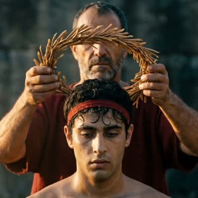

Artifact · SM_RV_16

The kotinos awarded to judoka Ilias Iliadis at Athens 2004 - the first Greek Olympic judo medal, won at SEVENTEEN. CORRECTED 2026-08-04: the Museum's own description says eighteen and we inherited it verbatim. Iliadis was born 10 November 1986 and competed in August 2004, so he was 17 years 9 months, and he is recorded as the youngest Olympic judo champion in history - a stronger claim than the Museum made, so this correction runs in their favour.
Every video this artifact appears in
Continuity paragraph + invariants + no-text line, as every artefact shot sent until today. Pipeline: certified still → Kling 3.0 (start frame) · 5 s.
One camera move, the one action, a hold line naming the three invariants. Deliberately without the no-text line so a win stays attributable. Pipeline: certified still → Kling 3.0 (start frame) · 5 s.
The judge lowers the olive wreath onto the athlete's head.
The olive wreath at rest.
Three assembled versions: the 20s 1080p sample, v2 full, and v1.
The wreath lowered onto the head.
Close on the victor; the judge's red sleeve in foreground.
Face raised to the sky, wreath still on.
He turns to the roaring crowd.
Aerial over the sanctuary (v2 restage).
The assembled scene.
Same cut, three generators. Which holds the shears + branch physics?
The four shots of the cutting scene.
Alternate candidate takes.
SAMPLE-B push-in and SAMPLE-C lift, plus the Veo push-in.
An early non-museum test object.
EDIT · 6 segments, each a full take you can watch on its own card: 0-4.0s = #79 (kotinos story wide) · 4.0-7.5 = #82 (1896 medal, deterministic) · 7.5-11.0 = #80 (kotinos medium) · 11.0-14.5 = #88 (1906 medal, deterministic) · 14.5-17.5 = #77 (kotinos macro) · 17.5-22.5 = #81 (kotinos close finale). Full segment map in the ledger. The argument as editing: the Hollywood-epic staged world (kotinos on ancient stone, god-rays) intercut with the certified real thing — deterministic camera moves over the museum renders of the 1896 and 1906 medals, their genuine legends legible because the pixels are real. Six beats, hard cuts, zero-fabrication assembly (ffmpeg trim+concat on individually gated clips). Sources: overnight run, 9 kotinos + 6 deterministic medal clips all gates PASS; the failed generative medal takes are preserved separately as documented failures.
Epic-block generation, all gates PASS. Kling/Seedance per ledger.
Epic-block generation, all gates PASS. Kling/Seedance per ledger.
Epic-block generation, all gates PASS. Kling/Seedance per ledger.
Epic-block generation, all gates PASS. Kling/Seedance per ledger.
Epic-block generation, all gates PASS. Kling/Seedance per ledger.
Epic-block generation, all gates PASS. Kling/Seedance per ledger.
Epic-block generation, all gates PASS. Kling/Seedance per ledger.
Epic-block generation, all gates PASS. Kling/Seedance per ledger.
Epic-block generation, all gates PASS. Kling/Seedance per ledger.
ONE GENERATION + one repair: a single 30s take; only Shot 3 (7.0-10.7s) was replaced by a separate 4s regeneration and spliced at the measured cuts. The untouched original is the v1 button. The sacred rite, fully sourced: the one wild olive by the temple, a boy's hands closing golden shears (framed chest-down — the record says nothing about him, so the frame shows nothing of him), the branches on the gold-and-ivory table, and the turn: the wreath lifted into the light is the REAL Athens 2004 kotinos, invariants held in an every-frame scan. v1's face-guard failure and its fix (negation -> positive framing) are preserved as versions and evidence.
EDIT · 3 sources: the single 30s generated take (shots kept for 0-3, 6-9 and 12-30s - watch it whole under the G6-FAIL button) + deterministic insert A at 3.0-6.0s (the shoes, computed from the digitisation) + deterministic insert B at 9.0-12.0s (the belt). Four real artifacts, one ritual arc: the breath, Tentoglou's shoes, the 1976 belt, the Sydney clubs, and the kotinos lowered onto a bowed head. The two ink closeups are DETERMINISTIC inserts — computed camera moves over the certified digitisations, so the handwriting on screen is the athlete's REAL ink (legible because it is true; only generated text can forge). The failed generative take is preserved beside it: it forged the same ink, and that comparison is the product argument in 30 seconds. First seedance-25 production prompt; the 30s platform cap confirmed the same afternoon for 0 credits.
REEVALUATE · every claim traceable to a ledger · full archive in the working room